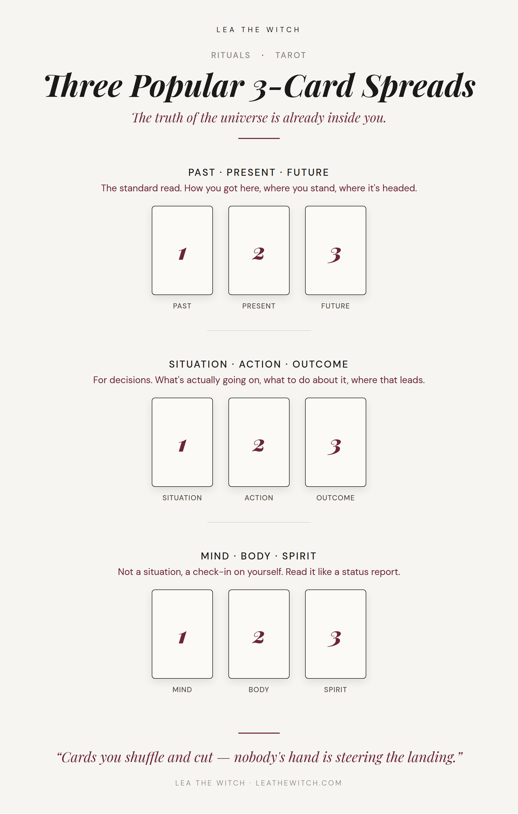

The Celtic Cross is for when something’s actually tangled. Most days you don’t need that. You need three cards and about two minutes, something closer to a quick reference than a whole session. These are the three I actually reach for, and when I reach for which one.

Past · Present · Future
The standard read, and the one to default to when you don’t know what you’re actually asking yet. Card one tells you how you got here, card two is where you honestly stand right now, not where you’d like to be standing, and card three is where it’s headed if nothing changes. Read it left to right like a sentence. If the three cards feel like they’re telling completely different stories, that’s not a misread, that’s usually the actual answer: something’s shifted, and the middle card is catching you mid-turn.
Situation · Action · Outcome
Pull this one when you’ve actually got a decision in front of you, not just a feeling you’re trying to name. Card one is what’s genuinely going on, stripped of the story you’ve been telling yourself about it. Card two is what to actually do about it. Card three is where that leads. If card two feels like advice you don’t want, sit with that a minute before you reshuffle and try again.
The truth of the universe is already inside you.
Mind · Body · Spirit
This isn’t for a situation, it’s a check-in on you. Pull it when nothing specific is wrong but something feels off and you can’t place where. Read it like a status report, not a story: what’s going on in your head, what your body’s actually telling you underneath that, and where you stand spiritually, however you personally define that word. Three separate readings on three separate systems, not one narrative.
Any of these three take less time than making tea. Shuffle, cut, lay them out, and trust what falls — same reasoning as always, laid out properly in The Physics Case for Tarot, but the short version is nobody’s hand is steering the landing.
← Back to Rituals